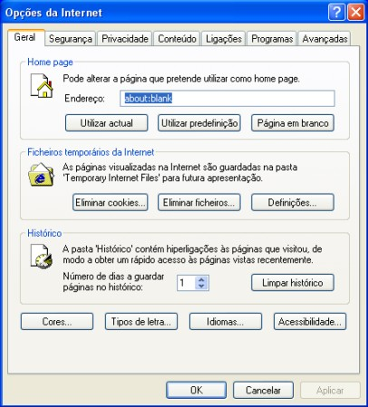
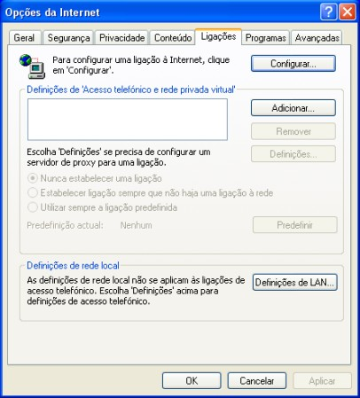
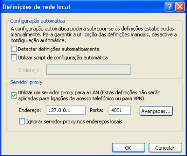

Configurações
para Vários Browsers
Configuração
do JAP para o Internet Explorer
Para configurar o JAP para o
Internet Explorer, siga os seguintes passos:
1.) No menu "Ferramentas", escolha o submenu
"Opções da Internet...".
A janela de configuração abre.

2.) Clique em "Ligações".

3.1) Modem ou ISDN:
Se usar um modem para ligar à Internet, primeiro escolha a
sua ligação na caixa
Definições de 'Acesso telefónico e
rede privada virtual'. De seguida, clique no botão
"Definições...".
3.2) DSL, cabo, ou qualquer
outra forma de ligação indirecta:
Clique no botão "Definições de LAN..."
em definições de rede local.
4.) Na janela então aberta, seleccione "Utilizar um
servidor proxy para a LAN" e introduza "127.0.0.1" no
endereço e "4001" na porta.

Nota:
Se configurar uma porta de escuta diferente
no JAP, tem de introduzir também aqui essa porta, em vez da
4001.